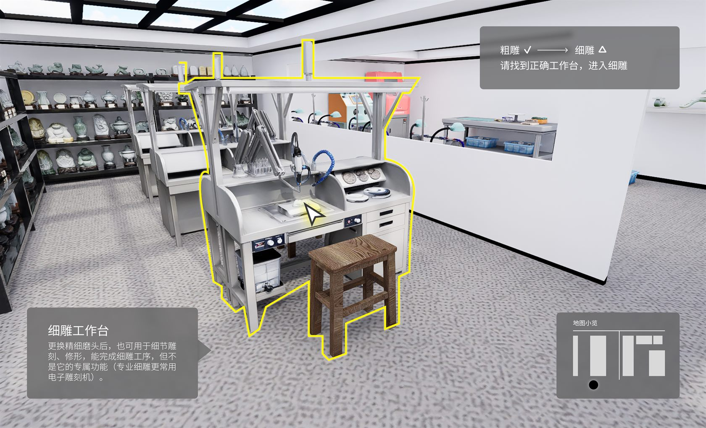
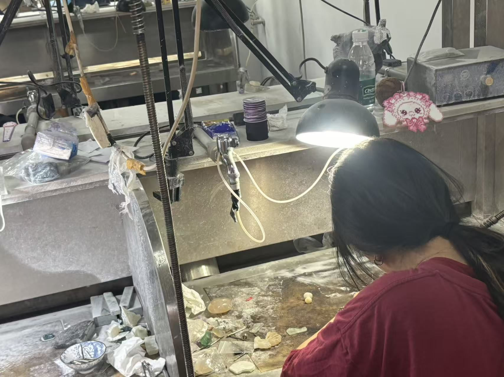
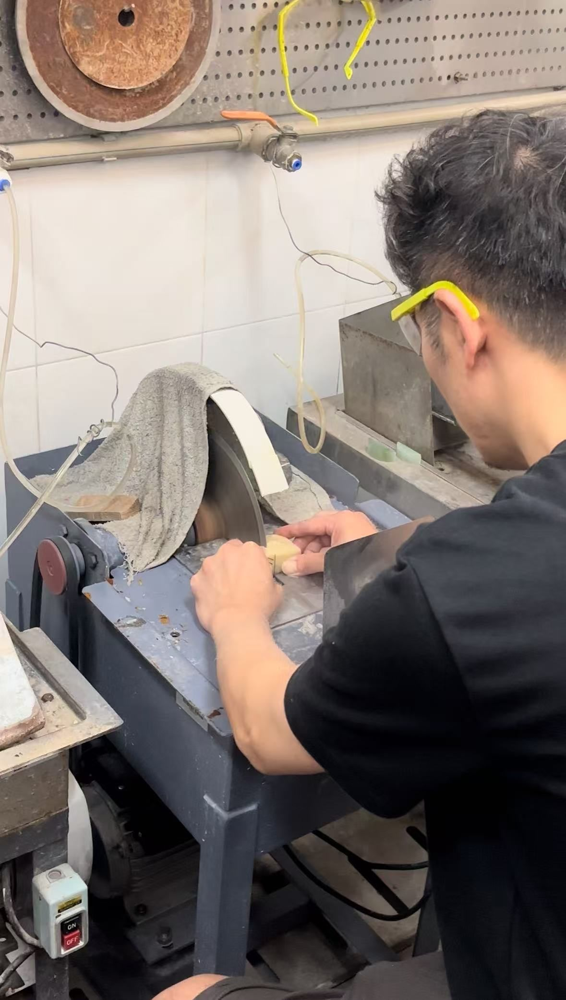
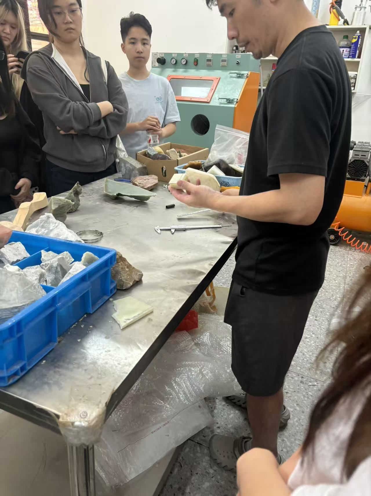
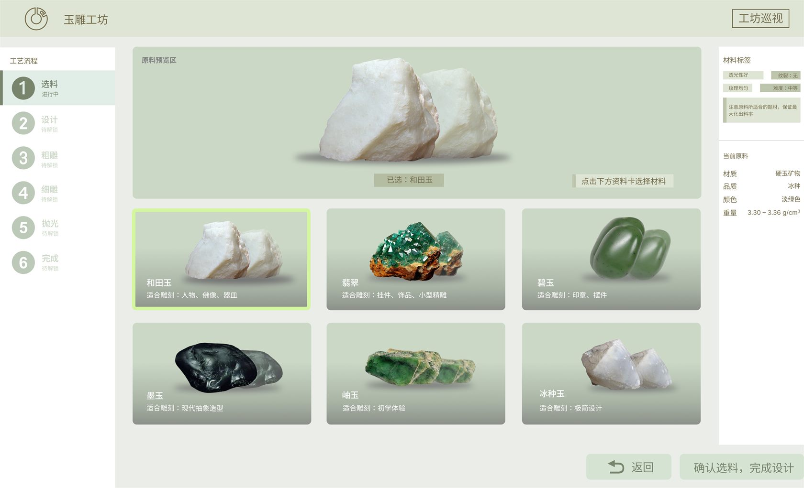
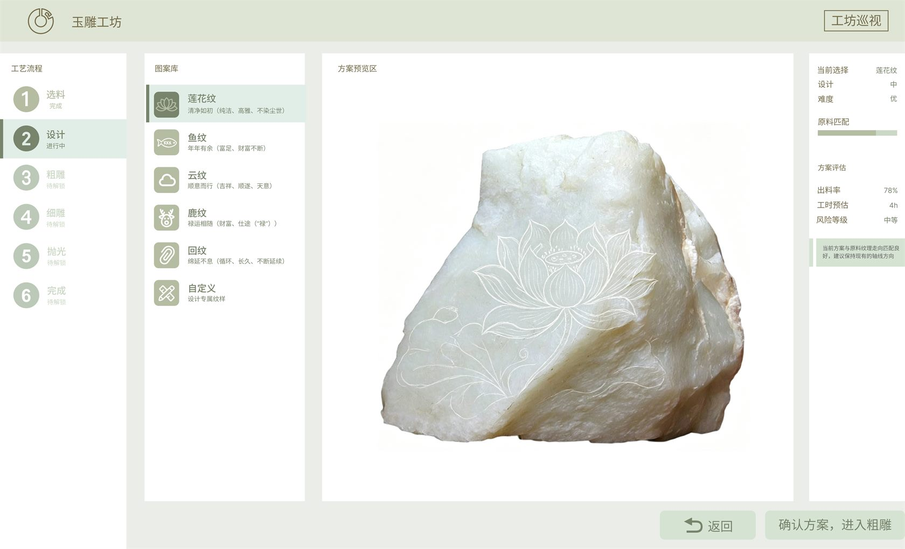
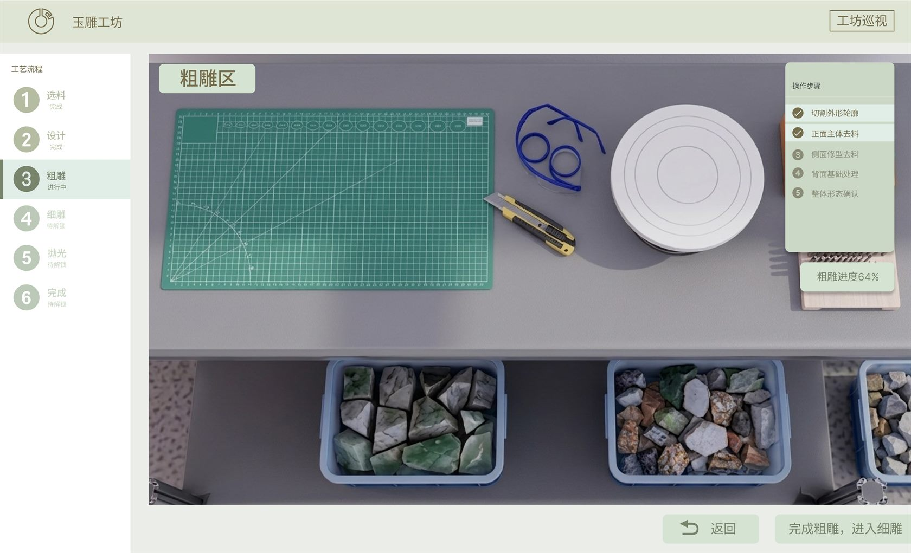
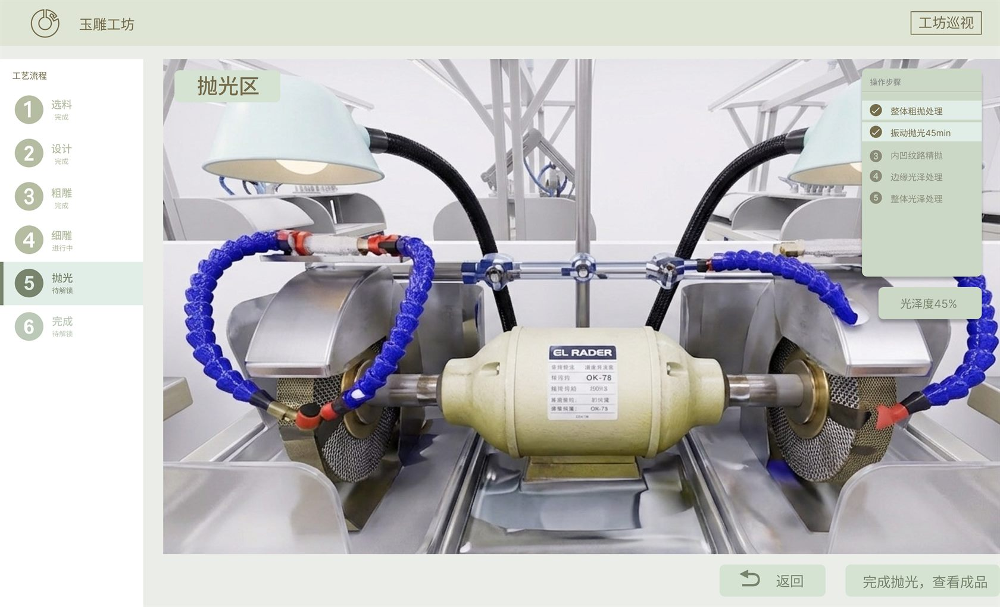
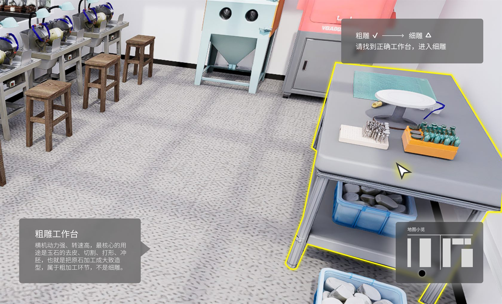

学生提前熟悉流程，教师减少重复讲解，实验室降低误操作和材料损耗风险。
返回作品列表
03 / Education Simulation MVP
JadeLab
面向高校玉雕实验室的虚拟实训系统，让学生在进入真实实验室前完成安全学习、工具认知、选料判断、工艺预演与结果反馈。

Product Overview
产品概览
JadeLab 目前处于 MVP 原型推进阶段，目标是把真实实验室中的高风险、高损耗、强经验知识，转译为可预演、可理解、可反馈的数字学习流程。
参与界面设计、流程拆解、Unity UI 实现、场景协作和部分交互演示。
已形成核心学习流程、关键页面、空间场景还原和可演示的 MVP 片段。
Why It Matters
为什么需要这个产品
玉雕教学不是单纯看步骤，而是材料、工具、工序、安全和经验判断共同作用的复杂场景。JadeLab 的价值在于把这些知识提前结构化。



真实材料试错成本高
玉料操作不可逆，初学者很难在低风险环境中反复练习判断。
工具和工序复杂
工具用途、加工顺序和操作状态容易混淆，需要更清晰的学习路径。
安全与经验知识难传达
口头讲解难以覆盖真实操作细节，错误往往到后期才暴露。
Learning Loop
核心学习闭环
进入系统
安全学习
工具认知
选料判断
图案设计
虚拟雕刻
抛光收尾
成果反馈
Feature System
关键功能设计
功能不按“页面”罗列，而是按学习任务组织，帮助学生从认知、判断到模拟操作逐步进入真实实验室语境。
安全知识模块
进入实训前完成安全规范、设备风险和操作边界学习。
玉料认知模块
通过选料界面理解材料状态、纹理判断和加工限制。
工具认知模块
将工具用途和操作阶段对应起来，降低初学者混淆成本。
工艺流程模块
围绕设计、粗雕、细雕、抛光、展示建立连续学习路径。
虚拟操作模块
通过 Unity 场景和交互演示预演关键操作，减少真实试错。
结果评估模块
把成果展示与反馈作为闭环终点，为后续迭代保留空间。
Prototype To Unity
从原型到落地
页面重点展示从真实场景理解、Figma 高保真界面到 Unity 场景与交互演示的推进过程。





MVP Status
当前状态与下一步
这是一个仍在推进中的教育类虚拟仿真产品原型，目前不以“已上线产品”呈现，而强调清晰的设计链路和落地协作能力。
已完成
真实实验室调研、核心学习流程、低保真方向、高保真 UI、Unity 场景还原和部分交互演示。
下一步
完善安全考核、工具反馈、雕刻交互、学习评估，以及教师端查看和反馈机制。